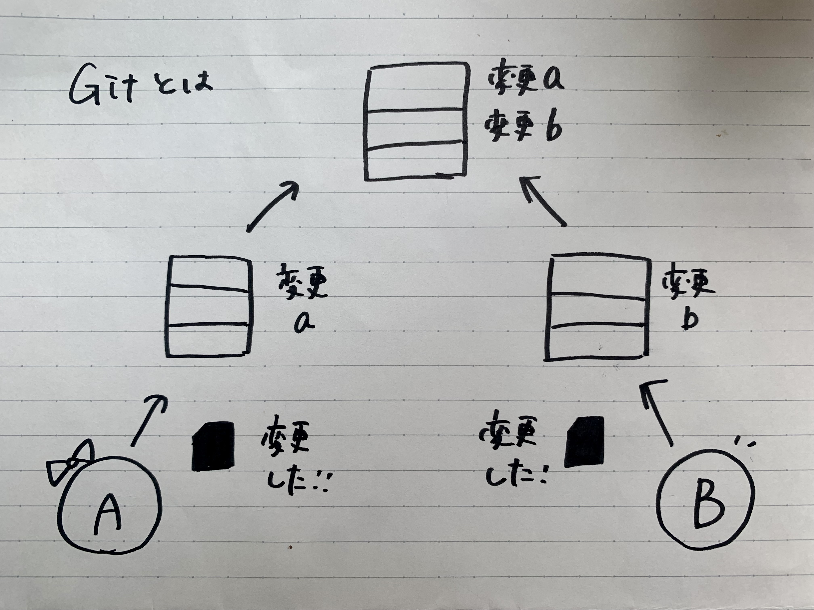

gitに関して
gitとは
gitとは,分散型バージョン管理システムのことである。gitで管理しているファイルであれば、コンピューター上でファイルの編集履歴 を管理できるから、編集前のファイルを残したまま、新しく編集したファイルを保存することができる。それができるのは以下の様々な特徴があるからである。
・古いバージョンに簡単に戻すことができる。
・新旧のファイルを一元管理できる。
・編集した履歴を複数人で共有できる。
・複数人で修正した部分を一つに統合できる。
また、gitは、CUIツールである。CUIツールとはキーボードで入力するコマンドによって操作するツールのことである。CUIツールはCUI仕様という真っ黒の背景 に文字だけある画面を持っている。ITやWEB業界で働いている人はこの一般的には使いにくいとされるCUIツールを使っている。それは、処理の自動化がしやすか ったり、操作の記録を残しやすかったりするというメリットがあるからである。
画像を表示₍30％₎

基本用語
参考サイト
<